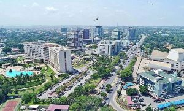

About Me

My name is Nicholas Commey. I live in Accra, Ghana. I'm currently working on a Web and Computer programming certificate. My curiosity and determination drive me to pursue innovative, high-impact work that tackles complex problems with multi-disciplinary approaches. 🤓
Accra, Ghana

"Accra is the capital and largest city of Ghana, located on the southern coast at the Gulf of Guinea, which is part of the Atlantic Ocean. In 2020, the Globalization and World Cities Research Network think tank designated Accra as a "Gamma −" level global city, indicating a growing level of international influence and connectedness." - Wiki